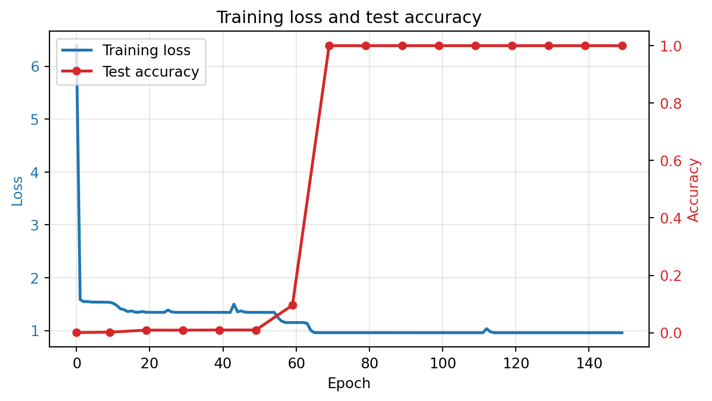

from _common import *
torch.manual_seed(42)
N_DIGITS = 33 Assembly and Training
NoteTakeaway
The model discovers an addition algorithm through gradient descent. You can watch it happen: accuracy sits near zero for many epochs, then jumps — a phase transition called grokking.
3.1 Stacking the pieces
Every piece is something you built in the previous chapter: embedding + position -> [attention -> residual -> norm -> FFN -> residual -> norm] x N -> linear head.
The full model code lives in _common.py. Here’s the architecture:
Input token IDs
|
v
Token Embedding + Position Embedding
|
v
[LayerNorm -> Attention -> Residual] -> [LayerNorm -> FFN -> Residual] (x2 layers)
|
v
Final LayerNorm
|
v
Linear Head (weight-tied with token embedding)
|
v
Logits over vocabularyLet’s instantiate the model and verify the parameter counts from Chapter 2.
# Sequence length: aaa+bbb=ssss<EOS> = 13 tokens
SEQ_LEN = 2 * N_DIGITS + 2 + N_DIGITS + 2
model = AdditionTransformer(
vocab_size=VOCAB_SIZE, d_model=32, d_ff=64,
n_layers=2, max_seq_len=SEQ_LEN
).to(DEVICE)
print(f"Device: {DEVICE}")
print(f"Sequence length: {SEQ_LEN}")
print()
# Parameter count per component
def show_params(model):
print("Parameter count by component:")
print(f" Token embedding: {model.token_emb.weight.numel():>6,} ({VOCAB_SIZE} x 32)")
print(f" Position embedding: {model.pos_emb.weight.numel():>6,} ({SEQ_LEN} x 32)")
for i, block in enumerate(model.blocks):
attn_p = sum(p.numel() for p in block.attn.parameters())
ffn_p = sum(p.numel() for p in block.ffn.parameters())
ln_p = sum(p.numel() for p in block.ln1.parameters()) + sum(p.numel() for p in block.ln2.parameters())
print(f" Block {i}: attention={attn_p:,}, FFN={ffn_p:,}, norms={ln_p:,}")
print(f" Final norm: {sum(p.numel() for p in model.ln_f.parameters()):>6,}")
print(f" LM head: (tied with token embedding)")
print(f"\n Total: {count_parameters(model):,}")
show_params(model)Device: mps
Sequence length: 13
Parameter count by component:
Token embedding: 448 (14 x 32)
Position embedding: 416 (13 x 32)
Block 0: attention=4,096, FFN=4,192, norms=128
Block 1: attention=4,096, FFN=4,192, norms=128
Final norm: 64
LM head: (tied with token embedding)
Total: 17,760Attention and FFN account for over 90% of the parameters — they do the actual computation. The embeddings are comparatively cheap: 864 parameters to represent the entire vocabulary and all 13 positions.
3.2 Dataset
50,000 training examples covers roughly 5% of the ~1 million possible 3-digit addition pairs, so the model must generalize rather than memorize.
train_X, train_Y = make_addition_dataset(50000, n_digits=N_DIGITS, seed=42)
test_X, test_Y = make_addition_dataset(10000, n_digits=N_DIGITS, seed=123)
print(f"Training: {train_X.shape}")
print(f"Test: {test_X.shape}")
print(f"\nSample: '{decode_tokens(train_X[0].tolist())}' -> '{decode_tokens(train_Y[0].tolist())}'")Training: torch.Size([50000, 12])
Test: torch.Size([10000, 12])
Sample: '654+114=8670' -> '54+114=8670<EOS>'The sample shows the reversed target encoding from Chapter 1 — ones digit first.
3.3 What the training loop does
Before we run the training code, it’s worth understanding the three key choices and why they matter:
Cross-entropy loss on all positions gives gradient signal at every step. The model learns to predict + after three digits, = after three more, then the answer digits. Computing loss on all positions (not just the answer) means the model also learns the structure of the input format — which is free supervision. The answer-only accuracy metric we track separately tells us whether the model has learned the actual algorithm.
AdamW with weight decay is Adam with decoupled L2 regularization. The weight decay biases the model toward smaller weights, which means simpler functions. This implicit regularization matters for grokking: it creates pressure toward solutions that generalize rather than solutions that merely memorize. Without weight decay, the model can fit the training data with large, complex weight configurations that don’t transfer to unseen inputs.
Cosine learning rate schedule with warmup. The warmup phase (200 steps at gradually increasing LR) prevents early instability when the model’s gradients are poorly calibrated. After warmup, cosine decay provides high LR for exploration (finding the right region of weight space) and lower LR later for refinement (fine-tuning within that region). Key insight from AdderBoard: these small models need aggressive learning rates (0.01, not the typical 1e-3) because the loss landscape for algorithmic tasks has sharp, narrow valleys that a small learning rate can’t reach.
The training recipe from AdderBoard: high learning rate (0.01) with linear warmup and cosine decay, gradient clipping, AdamW. These small models need aggressive learning rates — 1e-3 doesn’t work.
Watch the loss and accuracy columns during training — loss should drop steadily, but accuracy may stay near zero before a sudden jump.
answer_start = 2 * N_DIGITS + 1 # loss on all positions, accuracy on answer only
print("Training...")
history = train_model(
model, train_X, train_Y, test_X, test_Y,
answer_start=answer_start,
epochs=150, batch_size=512, lr=0.01,
warmup_steps=200, log_every=10
)Training...
Epoch 1 | Loss: 6.3898 | Test accuracy: 0.1%
Epoch 10 | Loss: 1.5362 | Test accuracy: 0.2%
Epoch 20 | Loss: 1.3470 | Test accuracy: 0.9%
Epoch 30 | Loss: 1.3448 | Test accuracy: 0.9%
Epoch 40 | Loss: 1.3444 | Test accuracy: 1.0%
Epoch 50 | Loss: 1.3447 | Test accuracy: 1.0%
Epoch 60 | Loss: 1.1524 | Test accuracy: 9.6%
Epoch 70 | Loss: 0.9603 | Test accuracy: 100.0%
Epoch 80 | Loss: 0.9599 | Test accuracy: 100.0%
Epoch 90 | Loss: 0.9599 | Test accuracy: 100.0%
Epoch 100 | Loss: 0.9597 | Test accuracy: 100.0%
Epoch 110 | Loss: 0.9596 | Test accuracy: 100.0%
Epoch 120 | Loss: 0.9594 | Test accuracy: 100.0%
Epoch 130 | Loss: 0.9593 | Test accuracy: 100.0%
Epoch 140 | Loss: 0.9592 | Test accuracy: 100.0%
Epoch 150 | Loss: 0.9591 | Test accuracy: 100.0%Look at the loss and accuracy curves together — if they decouple (loss drops while accuracy stays flat), the model is memorizing before it generalizes.
plot_training(history)
plt.show()
If the accuracy curve shows a sudden jump after an initial plateau, that’s grokking: the model memorizes the training data first, then discovers the generalizable algorithm. This phase transition is characteristic of algorithmic tasks.
NoteConnection: Grokking and generalization
The sudden accuracy jump is a phase transition from memorization to generalization. The model first memorizes training examples (low training loss, low test accuracy), then discovers the underlying algorithm (low training loss, high test accuracy). This challenges the standard intuition that training loss and generalization track together — here they decouple, sometimes for many epochs.
For statistical work, this pattern has a direct implication: a model that produces fluent, confident outputs may have memorized patterns without learning structure. Grokking shows that more training can be the path from memorization to understanding — but only if the architecture and regularization (weight decay) support it. Without weight decay, the model stays in the memorization regime indefinitely.
This also means that evaluating a model at a single training checkpoint can be misleading. A model that looks like it has failed to learn may be in the pre-grokking plateau, about to discover the algorithm.
3.4 Testing specific cases
These specific cases target distinct failure modes: 999+1 tests cascading carries across all columns, 111+222 tests the no-carry case, and 999+999 tests the maximum possible output.
print("Edge cases:")
test_addition(model, 123, 456)
test_addition(model, 999, 1) # carry propagation across all digits
test_addition(model, 0, 0)
test_addition(model, 999, 999) # maximum output
test_addition(model, 500, 500) # clean carry
test_addition(model, 111, 222) # no carriesEdge cases:
123 + 456 = 579
Output: '9750<EOS>' (ones-first) | Expected: '9750<EOS>' | CORRECT
999 + 1 = 1000
Output: '0001<EOS>' (ones-first) | Expected: '0001<EOS>' | CORRECT
0 + 0 = 0
Output: '0000<EOS>' (ones-first) | Expected: '0000<EOS>' | CORRECT
999 + 999 = 1998
Output: '8991<EOS>' (ones-first) | Expected: '8991<EOS>' | CORRECT
500 + 500 = 1000
Output: '0001<EOS>' (ones-first) | Expected: '0001<EOS>' | CORRECT
111 + 222 = 333
Output: '3330<EOS>' (ones-first) | Expected: '3330<EOS>' | CORRECTTrueAny failures here point to specific algorithmic gaps — a model that handles 111+222 but not 999+1 hasn’t learned carry propagation.
Autoregressive generation is a stricter test than teacher-forced evaluation: each predicted token feeds into the next, so errors compound.
# Broader accuracy check
n_correct = 0
n_test = 200
rng = random.Random(999)
for _ in range(n_test):
a = rng.randint(0, 999)
b = rng.randint(0, 999)
n_correct += test_addition(model, a, b) if False else 0
# Silent version
model.eval()
n_correct = 0
for _ in range(n_test):
a = rng.randint(0, 999)
b = rng.randint(0, 999)
inp, tgt = encode_addition(a, b, N_DIGITS)
generated = list(inp)
with torch.no_grad():
for _ in range(N_DIGITS + 2):
x = torch.tensor([generated], device=DEVICE)
logits = model(x)
generated.append(logits[0, -1].argmax().item())
if decode_tokens(generated[len(inp):]) == decode_tokens(tgt):
n_correct += 1
print(f"\nAutoregressive accuracy on {n_test} random problems: {n_correct}/{n_test} ({n_correct/n_test:.1%})")
Autoregressive accuracy on 200 random problems: 200/200 (100.0%)This autoregressive accuracy is the definitive measure — it reflects what the model can actually do at inference time.
TipCheck your understanding
Why compute loss on
+and=tokens, not just the answer digits? What gradient signal does this provide, and what does it teach the model about the input format?The model has ~17,000 parameters trained on 50,000 examples. In classical statistics, we’d call a model with fewer parameters than observations “underparameterized.” Is this model actually underparameterized? Consider: how many distinct 3-digit addition problems exist (including
a + bandb + a)? What does the ratio of training examples to total possible problems tell us about the effective complexity of addition?If accuracy jumps from near-0% to near-100% in a few epochs, what does that imply about the loss landscape? Is the model making gradual progress, or discovering a qualitatively different solution?